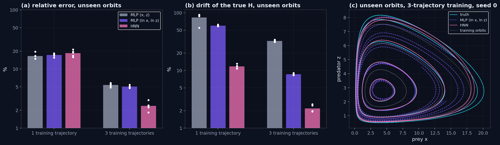

A small MLP parametrises the right-hand side of an ODE and is integrated end-to-end with a differentiable Dormand-Prince solver. The network learns the vector field of a damped pendulum and a Lotka-Volterra system directly from short noisy trajectories, then is rolled forward beyond the training horizon to test extrapolation.
A classical neural network learns a discrete map \(x \mapsto F(x)\). A Neural ODE (Chen et al., NeurIPS 2018) learns the derivative \(dy/dt = f_\theta(y, t)\) instead and integrates it with a numerical solver, making the entire forward pass differentiable through the adjoint method or direct backprop through every solver step.
This project trains the model on a short noisy trajectory of two textbook 2D systems — a damped pendulum and a Lotka-Volterra predator-prey model — and then rolls the learned ODE forward past the time window it was trained on. The natural question is whether it still behaves like the real system, including derived quantities the network was never asked to match (mechanical energy, the Lotka-Volterra invariant H).
Everything runs in a single command: python main.py trains both systems back-to-back and writes all figures plus a JSON metrics summary.
Neural ODE:
Solver-based forward pass:
Loss against observations:
Damped pendulum (true system):
Lotka-Volterra invariant:
Seven pieces connected end-to-end. Each lives in its own module with a dedicated responsibility.
Goal: generate ground-truth trajectories with controllable observation noise.
How: scipy.integrate.odeint (LSODA, rtol=1e-8, atol=1e-10) integrates the true ODEs from a chosen initial condition. i.i.d. Gaussian noise is added to the training half (\(\sigma = 0.005\) for the pendulum, \(0.03\) for Lotka-Volterra); the rest is held out clean for the extrapolation check.
Architecture: 3 hidden layers of width 96 with Tanh activations, output dim 2. 19 106 trainable parameters.
Init trick: the final Linear is rescaled by 0.1 with zero bias, so the initial vector field is nearly zero everywhere — the very first solver call cannot diverge.
Backend: torchdiffeq.odeint with the Dormand-Prince adaptive RK45 method (dopri5, rtol=1e-5, atol=1e-7).
Every internal solver state is kept on the autograd graph, so L.backward() propagates gradients through all the steps the solver took.
Adjoint alternative: keeping the whole trajectory on the graph costs \(O(L)\) memory in solver steps. The adjoint method (Pontryagin 1962; Chen et al. 2018) instead integrates a backward ODE for the gradient at \(O(1)\) memory — a drop-in odeint_adjoint. These 2D systems are small enough that plain odeint is faster and exact, so the adjoint is reserved for high-dimensional or long-horizon problems.
Optimiser: Adam with cosine-annealed LR (\(4\cdot10^{-3}\) for the pendulum, \(2\cdot10^{-3}\) for Lotka-Volterra), gradient clipped to \(\|\nabla\| \le 2\).
Curriculum: the matching window starts at 20–30 samples and grows by the same step every 70–100 epochs until it covers the full training trajectory. This avoids the early-training divergence typical of long integrations.
Once trained, the model is integrated over the full horizon \([0, T_{\text{full}}]\) and the MSE is computed separately on the training mask (\(t \le T_{\text{train}}\)) and the held-out extrapolation mask (\(t > T_{\text{train}}\)).
The relative extrapolation error is normalised by the peak amplitude of the ground-truth trajectory, not its mean square — avoids blow-up when the system approaches equilibrium.
Two structural quantities are evaluated on the predicted trajectory: mechanical energy \(E = \tfrac{1}{2}\dot{\theta}^2 + \omega_0^2(1-\cos\theta)\) for the pendulum, and the Lotka-Volterra invariant \(H\) along the orbit.
The MLP is never told these exist. How well they are reproduced is a strict test of how much structure the network rediscovers from the data alone.
Seven PNGs auto-saved by src/plots.py: training loss, time series with extrapolation band, phase plane on top of the learned streamplot, and the energy decay panel for the pendulum. A data/metrics.json file collects every reported number for both systems.
Each skill appears in a concrete piece of code, not as a generic claim.
nn.Module for the vector field, training loop with Adam, cosine LR schedule, gradient clipping.torchdiffeq.odeint with Dormand-Prince and adaptive tolerances, autograd through every solver step.scipy.integrate.odeint on the true ODE plus controllable Gaussian observation noise.python main.py runs the full pipeline end-to-end and writes every figure plus a JSON metrics summary.02-neural-odes/ ├── README.md # step-by-step walk-through with embedded figures ├── requirements.txt ├── main.py # end-to-end pipeline (both systems) ├── src/ │ ├── systems.py # pendulum + Lotka-Volterra, noise injection, invariants │ ├── ode_net.py # ODEFunc MLP + torchdiffeq integration │ ├── train.py # curriculum-aware training loop + evaluation │ └── plots.py # dark portfolio-styled figures ├── figures/ # tracked PNGs embedded in README └── data/ # (gitignored) metrics.json summary
ODEFunc MLP (3 hidden layers · width 96 · Tanh) with small final-layer init for stable warm-uppython main.py) writes all figures and a JSON metrics summaryTrained on t ∈ [0, 12], evaluated on the full [0, 20] horizon. Hover any chart for values, zoom with the toolbar, toggle traces in the legend.
fθ · 3 hidden layers × width 96t = 20 · interpreted belowTrained on t ∈ [0, 12], evaluated on the full [0, 22] horizon. Closed orbits make this a strictly harder benchmark — small phase errors compound across each period, and the orbit must remain bounded despite never being told the dynamics are conservative.
fθ · same architecture as the pendulumt > 12 · mean ± std over 5 seedsThe unconstrained MLP keeps the Lotka-Volterra orbit closed only to within ≈ 9 % drift in the conserved quantity \(H\). Two questions follow: does encoding the Hamiltonian structure into the architecture shrink that drift, and does it help the model generalise beyond the one orbit it was trained on? Lotka-Volterra is canonically Hamiltonian in log-coordinates \((q, p) = (\ln x, \ln z)\) with \(H(q, p) = b\,e^{p} + d\,e^{q} - a\,p - c\,q\); an HNN parametrises a scalar \(H_\theta\) and computes the dynamics as the symplectic gradient via autograd, so every predicted orbit preserves \(H_\theta\) by construction.
Same width and depth as the baseline MLP — 3 hidden layers · width 96 · Tanh — but output dimension 1 (the scalar Hamiltonian). 19 009 trainable parameters, essentially the same budget as the baseline (19 106).
Same training schedule: 2 000 epochs, Adam with cosine-annealed lr starting at 2·10⁻³, gradient clipped at 2.0, curriculum window growing every 80 epochs from 30 samples up to 300.
The training signal is MSE on the noisy log-coordinate observations \((\ln x, \ln z)\). At evaluation time the predicted log-trajectory is exponentiated back to \((x, z)\) for an honest comparison against the same ground truth used by the MLP — so train MSE values are not directly comparable across the two models, but extrapolation error and invariant drift are.
The HNN trained on the same single trajectory as the MLP, scored on the forward extrapolation of that orbit.
| Quantity | unconstrained MLP | Hamiltonian NN (single run) |
|---|---|---|
| Trainable parameters | 19 106 | 19 009 |
| Relative extrapolation error \(\sqrt{\text{MSE}} / \max|y|\) | 0.96 % ± 0.57 % (5 seeds) | _filled by run_ |
| Drift of \(H\) along orbit \(\operatorname{std}(H)/\langle H \rangle\) | 8.99 % ± 3.30 % (5 seeds) | _filled by run_ |
The HNN was trained once; it changes the architecture and the coordinates at the same time (the MLP works in \((x, z)\), the HNN in \((\ln x, \ln z)\)); and it only tests the orbit the models were trained on, which cannot tell whether a model learned the vector field or one closed curve. The controlled ablation below addresses all three.
Three models with the same width, depth and schedule — the MLP in \((x, z)\), the same MLP in \((\ln x, \ln z)\) as a coordinate control, and the HNN — trained on one trajectory or on three, with the initial state of each training trajectory fitted jointly with the network. Each is scored on five orbits it never saw, over \(t \in [0, 22]\). Five seeds per configuration, 30 runs; the \(H\) drift is normalised by the height of each orbit above the fixed point.
| Training | Model | Unseen orbits · rel. error | Unseen orbits · \(H\) drift | Training orbit · \(H\) drift |
|---|---|---|---|---|
| 1 trajectory | MLP \((x, z)\) | 16.6 % ± 1.9 % | 82.7 % ± 15.7 % | 6.45 % ± 1.51 % |
| 1 trajectory | MLP \((\ln x, \ln z)\) | 17.3 % ± 1.2 % | 60.1 % ± 1.6 % | 2.14 % ± 0.30 % |
| 1 trajectory | HNN | 18.5 % ± 2.2 % | 11.7 % ± 0.9 % | 2.36 % ± 0.29 % |
| 3 trajectories | MLP \((x, z)\) | 5.35 % ± 0.37 % | 32.5 % ± 1.3 % | 12.8 % ± 1.4 % |
| 3 trajectories | MLP \((\ln x, \ln z)\) | 5.03 % ± 0.23 % | 8.60 % ± 0.33 % | 5.51 % ± 0.15 % |
| 3 trajectories | HNN | 2.38 % ± 0.41 % | 2.18 % ± 0.32 % | 1.52 % ± 0.18 % |

With one trajectory, the MLP in log-coordinates conserves \(H\) as well as the HNN (2.14 % vs 2.36 %) and tracks the orbit more closely (0.43 % vs 3.06 % relative error). The lower drift in the first comparison came mostly from the change to \((\ln x, \ln z)\), not from the Hamiltonian structure.
Trained on a single orbit, all three models miss unseen orbits by 17–18 %, the HNN included. The HNN's orbits still close (\(H\) drift 11.7 % against 60–83 %), but they are the wrong orbits: an \(H_\theta\) that is accurate along one curve need not be accurate anywhere else.
On unseen orbits the HNN's error is less than half that of the log-coordinate MLP (2.38 % vs 5.03 %) and its \(H\) drift four times smaller (2.18 % vs 8.60 %), with every seed better than every MLP seed on both metrics. The MLP's orbits spiral slowly in or out; the HNN's stay closed near the true ones, including the two orbits above the training range. The HNN remains applicable only to systems known to be Hamiltonian, in known canonical coordinates; for the damped pendulum the natural extension is a dissipation-aware split flow (Sosanya & Greydanus, 2022).
The ablation above, made interactive: a Streamlit app on Hugging Face Spaces running live inference from the trained checkpoints. In the single-orbit views (Lotka-Volterra or the simple harmonic oscillator), drag the horizon slider and watch the conserved quantity \(H\) along the training orbit. In Lotka-Volterra · unseen orbits, choose one or three training trajectories and an orbit none of the three models saw, and compare the MLP, the log-coordinate MLP and the HNN directly.
First load can take 20–40 s while the Hugging Face Space cold-starts; subsequent interactions are instant. If the iframe is blocked by your browser, use the Open in new tab link above.
Why accuracy or a confusion matrix isn't the right metric here, which numbers do apply, and what the headline figures actually mean.
This is not classification, and it is not the usual flat regression either. The output of the model is a continuous function of state — the vector field of an ODE — and the training signal is a whole trajectory, not a label per sample. The relevant question is no longer "how often is it right" but "does integrating the learned field reproduce the right dynamics, including outside the training window?".
| Problem type | Output | Typical metrics |
|---|---|---|
| Classification | discrete class label | accuracy, precision, recall, F1, ROC-AUC, confusion matrix |
| Pointwise regression | continuous number per sample | MSE, MAE, R², RMSE |
| Vector-field regression (this project) | continuous function — the RHS of an ODE | train/extrapolation MSE, scale-free relative error, structural-invariant drift |
Three layers stacked together — each answers a different question.
MSE on the held-out clean trajectory restricted to \(t \le T_{\text{train}}\). A floor of about the observation-noise variance is the best an unconstrained MLP can be expected to reach.
Same MSE on the held-out window \(t > T_{\text{train}}\) — the part the network was never shown. Reported both as raw MSE and as a scale-free relative error \(\sqrt{\text{MSE}} / \max|y|\) so amplitudes don't dominate the comparison between systems.
Mechanical energy on the pendulum and the Lotka-Volterra invariant \(H\) along the predicted orbit. The MLP is never told these exist — drift in either is a direct measure of how much physics the network rediscovered from data alone.
Phase plane with the learned vector field overlaid as a streamplot. A correct fit produces orbits that close on themselves (Lotka-Volterra) or spiral cleanly to the equilibrium (pendulum) — qualitative failures show up here long before they do in scalar metrics.
| Metric | What it measures | Threshold | Result |
|---|---|---|---|
| Pendulum · train MSE | fit on the noisy training horizon | ≲ noise² · 10 = 2.5·10⁻⁴ | 1.4·10⁻⁴ ✓ |
| Pendulum · rel-err extrap | scale-free error past \(T_{\text{train}}\) | ≤ 10 % | 5.4 % ✓ |
| Pendulum · final |ΔE/E| | energy drift at \(t = T_{\text{full}}\) | < 5 % (ideal) · > 100 % (failure) | 137 % — see below |
| Lotka · train MSE | fit on the noisy training horizon | ≲ noise² · 10 = 9·10⁻³ | 5.6·10⁻³ ✓ |
| Lotka · rel-err extrap | scale-free error past \(T_{\text{train}}\) | ≤ 5 % | 1.6 % ✓ |
| Lotka · drift in \(H\) | structural-invariant deviation along orbit | ≤ 10 % | 7.9 % ✓ |
Three observations, in order of how informative the discrepancy is.
Relative extrapolation error of 5.4 % for the pendulum and 1.6 % for Lotka-Volterra. Closed orbits make Lotka strictly harder per period, but the amplitude is preserved across multiple cycles into the held-out window — the orbit stays bounded despite the network never being told the dynamics are conservative.
Inside the training window the predicted energy tracks the true dissipation envelope. Past it, the predicted oscillation keeps its amplitude instead of continuing to decay — the network learns the period and phase but only an approximate \(\gamma\). The 137 % final-time drift is the snapshot consequence; the qualitative summary is "the envelope is right, the late-time decay rate is not".
The architectural fix is not more training — it is encoding the structure. A Hamiltonian Neural Network (Greydanus et al., 2019) conserves its learned \(H_\theta\) by construction; it is the right prior for conservative systems and is tested on Lotka-Volterra above. The pendulum is dissipative, so the matching prior is a Hamiltonian-plus-dissipation model such as Dissipative SymODEN (Zhong et al., 2020) — the natural next step.
The headline numbers are what an MLP without physics priors achieves on these two systems. They establish the bar against which any inductive-bias improvement (Hamiltonian, Lagrangian, Symplectic ODE-Net) must show a measurable benefit. The follow-ups in the README close that gap by encoding invariants instead of letting the network rediscover them.